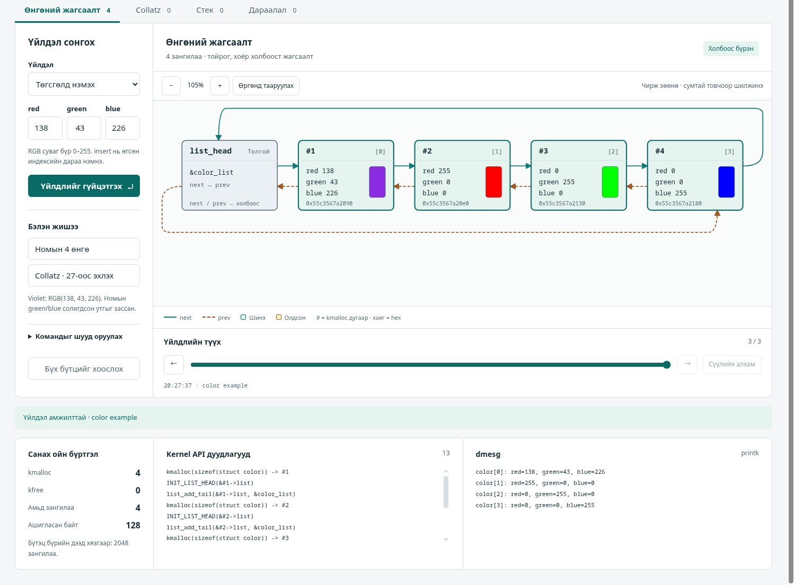
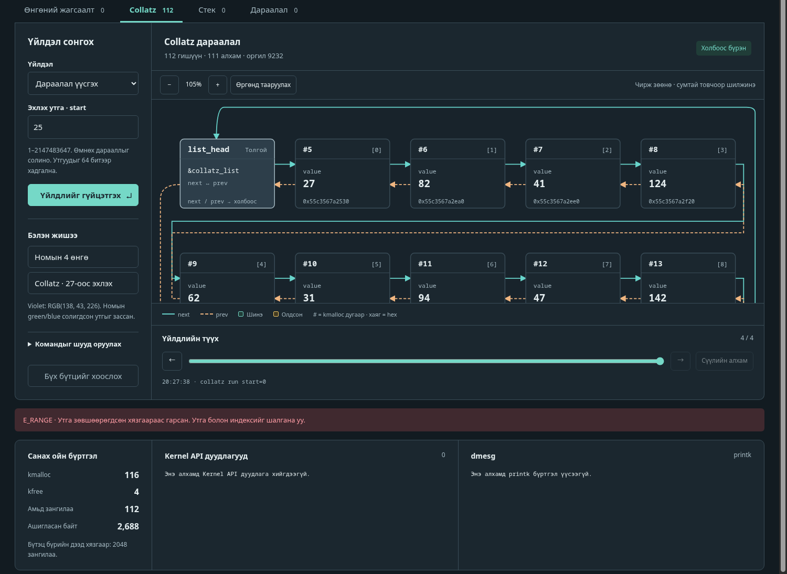

| Хуваарилалтын код | IV-2-4 |
| Төсөл | Kernel Data Structures (OS Concepts 10e, Ch. 3, Project 4) |
| UI дүрслэл | Kernel structure graph |
| Repository | [GitHub холбоос] · хавтас kernel-data-structures |
| Тайлан | docs/IV-2-4_BD1_Report.pdf |
make → make test → make run, дараа нь browser-ээр http://127.0.0.1:8080 нээнэ.Linux kernel-ийн дугуй хоёр холбоост жагсаалт struct list_head-ийг турших, үйлдэл бүрийн дараа next/prev заагч, kmalloc/kfree хэрхэн өөрчлөгдөхийг граф дээр харах. Дөрвөн бүтэц: Өнгөний жагсаалт (номын Part I), Collatz (Part II), Стек, Дараалал. Граф нь хуурамч загвар биш, C хөдөлгүүрийн бодит заагчаас зурагдана.
/proc ашигладаг тул macOS/Windows-д туршаагүй.gcc (16.2.1-ээр туршсан), make (GNU Make 4.4.1), python3 (3.14.8; зөвхөн стандарт сан).git clone <GitHub холбоос> kernel-data-structures && cd kernel-data-structures (холбоос байхгүй бол хүргэсэн хавтсыг хуулж cd хийнэ — 8.2.1)make — build/kds_engine үүснэ.make test — эцэст нь All available tests passed. гарна.make run — терминалд http://127.0.0.1:8080 гарна.| Таб | Үйлдэл (UI дээрх нэр) | Оролт |
|---|---|---|
| Өнгөний жагсаалт | Төгсгөлд нэмэх / Эхэнд нэмэх (add_tail/add_head) | red, green, blue: 0…255 |
Индексийн дараа оруулах (insert) | index (0-ээс; тэр индекстэй зангилааны дараа) + өнгө | |
| Индексээр устгах | index | |
| Өнгөөр устгах / Өнгөөр хайх | Дор хаяж нэг өнгө; тохирох бүх зангилаа | |
| Жагсаалтыг гүйлгэх / хоослох | — | |
| Collatz | Дараалал үүсгэх (run) | start: 1…2147483647 (өмнөхийг солино) |
| Утгаар хайх / устгах; гүйлгэх; хоослох | value: бүхэл тоо | |
| Стек | push (толгойд), pop, peek | value: тэмдэгтэй 64 бит |
| Дараалал | enqueue (төгсгөлд), dequeue, peek | value: тэмдэгтэй 64 бит |
Бэлэн жишээ: «Номын 4 өнгө» (color example), «Collatz · 27-оос эхлэх». Командыг шууд оруулах (хураангуй хэсэг) — дурын хөдөлгүүрийн команд (жишээ нь inject_fail after=2, check), ≤ 512 тэмдэгт, нэг мөр.
Серверийн тохиргоо (python3 src/ui/server.py): --port (default 8080), --max-nodes (1…100000, default 2048; бүтэц бүрийн зангилааны дээд хязгаар), --engine (default build/kds_engine). Жишээ: python3 src/ui/server.py --port 9000 --max-nodes 50. URL параметр: ?run=cmd1;cmd2 (командуудыг дарааллаар автоматаар ажиллуулна), ?tab=color|collatz|stack|queue, ?theme=dark.
make run. Үйлдэл хийхэд «Үйлдлийг гүйцэтгэх» (эсвэл Enter).make run-ийн терминал дээр Ctrl+C. Хөдөлгүүр дуусахдаа чөлөөлөөгүй санах ой үлдсэн бол LEAK: live=N гэж бичнэ (хэвийн үед гарахгүй).reset) — 4 бүтцийг чөлөөлж, алдааны тарилгыг унтраана; kmalloc/kfree хуримтлагдсан тоолуур үргэлжилнэ. Хөдөлгүүрийг бүрэн дахин эхлүүлэх: сервер зогсоож дахин асаана, эсвэл curl -X POST http://127.0.0.1:8080/api/restart.?run=…-тай хуудсыг дахин ачаалбал командууд дахин ажиллана.| Тэмдэг | Утга |
|---|---|
| list_head (саарал, «Толгой») | Жагсаалтын толгой (&color_list гэх мэт). next/prev нь анхны ба сүүлийн зангилааг заана. |
Зангилааны хайрцаг #7 [0] | # = kmalloc-ийн дугаар (serial); [ ] = жагсаалт дахь индекс (0-ээс); дор нь талбарууд ба хаяг (hex). |
| Өнгөний swatch | rgb(red, green, blue)-ийн бодит өнгө. |
| Тасралтгүй сум (next) | Зангилааны next заагч. Сүүлийн зангилаанаас толгой руу нум = дугуй (circular) бүтэц. |
| Тасархай сум (prev) | Зангилааны prev заагч. Толгойноос сүүлийн зангилаа руу нум. |
Улаан ? | Заагч бүртгэлд байхгүй зангилаа руу заасан (жагсаалт эвдэрсэн). |
| Толгойн өөртөө заасан сум | Жагсаалт хоосон (head->next == head). |
| TOP · орой, FRONT · эхлэл, REAR · төгсгөл | Стек ба дарааллын байрлалын шошго. |
| «Шинэ» (ногоон хүрээ) | Сая нэмэгдсэн зангилаа. |
| «Олдсон» (шар хүрээ) | Хайлтаар олдсон зангилаа; хайлтын явцад гүйлгэсэн зангилаанууд дарааллаар тодорно (анимаци). |
| Тэмдэг «Холбоос бүрэн» / «Холбоос алдаатай» | kds_verify-ийн үр дүн (next→prev, prev→next, хоёр чиглэлийн тоо). |
| Санах ойн бүртгэл | kmalloc (нийт дуудсан), kfree, Амьд зангилаа = kmalloc − kfree, Ашигласан байт. |
| Kernel API дуудлагууд / dmesg | Үйлдлийн бодит kmalloc/list_*/kfree дуудлага; printk-ийн мөр. |
| Дээд талын төлөв | «Хөдөлгүүр холбогдсон» / «Холболтын алдаа»; улаан мөр = алдаа (код + тайлбар). |
| Томруулах − 105 % +, «Өргөнд тааруулах» | Том жагсаалтад (Collatz 27 = 112 зангилаа) ойртуулах/холдуулах; графыг чирж зөөнө; сумтай товчоор шилжинэ. |
| «Бараан/Цайвар горим» | Өнгөний горим солих. |
color[0]: red=138, green=43, blue=226
color[1]: red=255, green=0, blue=0
color[2]: red=0, green=255, blue=0
color[3]: red=0, green=0, blue=255red = 255 → «Олдсон» тодорно: #2 (индекс 1). Хайлтын зам #1 → #2 ... анимацитай.index = 1 → list_del(->list), kfree(#2); граф #1 → #3 → #4 болно. Тоолуур: kmalloc 4 / kfree 1 / амьд 3 / 96 байт.
start = 27. Хүлээгдэх: 112 зангилаа, 111 алхам, оргил 9232; 27 → 82 → 41 → 124 → 62 → 31 → …; Амьд зангилаа 112 (24 B × 112 = 2,688 байт).value = 9232 → хайлт эхнээс явж 77-р индексэд (оргил) олдоно.collatz run start=0 гэж бичиж илгээнэ (энэ нь форм биш: «Дараалал үүсгэх» формын start талбар min=1 тул browser 0-г өөрөө хаадаг бөгөөд engine хүртэл хүрэхгүй). Улаан мөр E_RANGE; граф (112 зангилаа) болон тоолуур өөрчлөгдөхгүй.value = 9232 → 111 зангилаа.start = 837799 → 525 зангилаа, оргил 2974984576 (int32-ээс их, тиймээс 64 бит).
collatz run start=0 → E_RANGE; 112 зангилаатай төлөв өөрчлөгдөөгүй (бодит screenshot; тухайн зургийг ижил командыг URL-ийн ?run=-аар илгээж авсан).Стек: push 10, push 42, push −2 → TOP = −2; pop → −2 гарна, TOP = 42. Дараалал: enqueue 10, enqueue 42 → FRONT = 10, REAR = 42; dequeue → 10 гарна.
http://127.0.0.1:8080/?run=reset;color%20example;color%20delete%20index=1 — reset хийгээд номын жишээг үүсгэж, 1-р индексийг устгана.
«Командыг шууд оруулах» хэсэгт inject_fail after=2, дараа нь color add_tail red=1 green=2 blue=3-ийг гурав гүйцэтгэнэ. Эхний хоёр амжилттай, гурав дахь нь E_NOMEM («kmalloc failed; the previous state is preserved») — граф өөрчлөгдөхгүй. inject_fail off — унтраана.
| Харагдах зүйл | Шалтгаан | Шийдэл |
|---|---|---|
| Хуудас нээгдэхгүй; «Холболтын алдаа» | Сервер ажиллахгүй / өөр порт | make run ажиллаж байгаа эсэх, терминал дахь хаягийг шалгах |
Address already in use | 8080 порт завгүй | python3 src/ui/server.py --port 8081 (эсвэл өөр процессыг зогсоох) |
build/kds_engine олдохгүй / make run унана | Бүтээгээгүй | Эхлээд make |
cc: command not found, make: command not found, python3: command not found | Хэрэгсэл суулгаагүй | gcc, make, python3 суулгах (8.2.3) |
| E_RANGE (өнгө 256, −1; index; start 0, 2147483648) | Хязгаараас хэтэрсэн (формын min/max нь ихэнхийг browser дээр нь хаадаг; «Командыг шууд оруулах» эсвэл HTTP-ээр шууд илгээвэл engine E_RANGE буцаана) | Өнгө 0…255, start 1…2147483647, индекс 0…(тоо−1) |
| E_BAD_VALUE | Тоо биш утга (abc) | Аравтын бүхэл тоо оруулах |
| E_MISSING_ARG / E_UNKNOWN_ARG / E_SYNTAX | Дутуу, мэдэхгүй, давхардсан аргумент, 512-аас урт мөр | Командыг key=value хэлбэрээр, нэг түлхүүрийг нэг удаа бичих |
| E_EMPTY | Хоосон стек/дарааллаас pop/dequeue/peek | Эхлээд push/enqueue хийх |
| E_NOT_FOUND | Хайлт/устгал тохирохгүй | Хэвийн; өөр утга өгөх |
| E_FULL | --max-nodes хязгаар дүүрсэн | Хоослох/reset, эсвэл --max-nodes-ийг нэмэх |
| E_NOMEM | Тарьсан санах ойн алдаа (inject_fail) | inject_fail off эсвэл «Бүх бүтцийг хоослох» |
| Үйлдлийн товч идэвхгүй, «Түүхийн агшин — зөвхөн уншина» | Өнгөрсөн алхмыг үзэж байна | «Сүүлийн алхам» товч |
| Хуучин дүрслэл харагдана | Browser-ийн кэш | Хуудсыг шахан дахин ачаалах (Ctrl+Shift+R) |
git clone <GitHub холбоос> kernel-data-structures
cd kernel-data-structuresХолбоос байхгүй бол (оффлайн): хүргэж өгсөн kernel-data-structures хавтсыг (эсвэл архивыг) өөрийн компьютерт хуулж, архив бол задлаад хавтас руу орно. Дараагийн бүх алхам ижил.
cp -r /зам/kernel-data-structures ~/kernel-data-structures # эсвэл: tar -xf kernel-data-structures.tar
cd ~/kernel-data-structuresАгуулга: README.md, Makefile, src/ (shim/, kernel/, engine/, ui/), tests/, docs/.
| Зүйл | Туршсан хувилбар | Тайлбар |
|---|---|---|
| OS | Arch Linux, Linux 7.2.11-arch1-1 x86_64 | Өөр Linux тархалтад туршаагүй |
| C compiler | gcc (GCC) 16.2.1 20260810 | GNU C11 (-std=gnu11), __typeof__ ашигладаг; ASan/UBSan дэмжих ёстой |
| make | GNU Make 4.4.1 | |
| python3 | 3.14.8 | Зөвхөн стандарт сан |
| Browser | Brave 156.1.98.60 (Chromium) | Зөвхөн Chromium-д туршсан |
Хамгийн бага шаардлагатай хувилбарыг тодорхойлоогүй (зөвхөн дээрх хувилбараар туршсан).
Гуравдагч талын сан шаардахгүй. Хэрэгсэл байхгүй бол (жишээ; энэ тайланд ажиллуулаагүй):
# Arch Linux
sudo pacman -S gcc make python
# Debian / Ubuntu
sudo apt install build-essential python3Kernel module бүтээхэд (заавал биш, 8.2.7) kernel header хэрэгтэй (жишээ нь Arch: linux-headers, Debian/Ubuntu: linux-headers-$(uname -r)).
| Команд | Үр дүн |
|---|---|
make | build/kds_engine, build/libkds.a (shim + engine core) |
make test | Бүх тест (build/sanitized/ дахь ASan+UBSan build-ээр); алдаатай бол 0-ээс өөр кодтой гарна |
make run | UI сервер: python3 src/ui/server.py --port 8080 --max-nodes 2048 --engine build/kds_engine |
make module KDIR=/path/to/kernel/build | Жинхэнэ kernel module (Kbuild); kernel header шаардана |
make clean | build/, кэш, kernel build үлдэгдлийг устгана |
Хөдөлгүүрийг шууд (UI-гүй) ажиллуулах — нэг команд = нэг мөр, хариу = нэг мөр JSON:
printf 'color example\ncolor delete index=1\nstate\n' | build/kds_engine
build/kds_engine --max-nodes 3 < tests/cases/max_nodes.in| Файл | Агуулга |
|---|---|
tests/test_list.c | Өөрийн list.h: unit + 5,000 санамсаргүй үйлдэл (seed 0x0c011a72) |
tests/test_color_module.c, test_collatz_module.c | Жинхэнэ module .c + shim: printk, leak, ENOMEM; Collatz 1, 15, 25, 27, 97, 837799, 2147483647 |
tests/test_core.c | Engine core, kds_verify-ийн 10 эвдэрсэн жагсаалт |
tests/cases/*.in + *.expected.json | 9 бүлэг: book_example, color_operations, boundary_errors, stack_queue, collatz_reference, max_nodes, allocation_failure, ignored_lines, binary_garbage |
tests/run_cases.py | Сценарийн тест (python3 tests/run_cases.py --engine build/kds_engine) |
tests/test_server.py | HTTP серверийн 11 тест (процессын бүлэгт SIGINT илгээж цэвэр shutdown шалгах тест орно) |
tests/ui/browser_check.py, tests/ui/interactions.py | Заавал биш UI шалгалт (Brave/Chromium, CDP): 4 таб, 112 зангилаа ба 226 сум, хайлт/устгал, RGB баталгаажуулалт, түүх, zoom/pan, горим, 320/390 px, JS алдаагүй. make test-д ороогүй |
tests/README.md | Тест бүрийн оролт, хүлээгдсэн үр дүн, гарал үүсэл |
UI шалгалт ажиллуулах (заавал биш): нэг терминалд make run, нөгөөд нь дараалан python3 tests/ui/browser_check.py, python3 tests/ui/interactions.py. Скриптүүд хөдөлгүүрийг дахин эхлүүлж төлөвийг солино; screenshot-ыг /tmp/kds-ui-check-д хадгална. Орчны хувьсагч: KDS_URL (өөр сервер), KDS_BROWSER (browser-ийн зам), KDS_OUTPUT (гаралтын хавтас). Скриптүүд зөвхөн итгэмжит локал UI-д зориулагдсан түр headless browser (--no-sandbox) асаана.
Collatz лавлагааг дахин үүсгэх (Python, production кодыг ашиглахгүй): python3 tests/reference_cases.py.
Хөдөлгүүрийн түвшин (printf '…\n' | build/kds_engine): алдаа бүрт "ok":false, error.code доорх шиг, төлөв, kmalloc тоолуур өөрчлөгдөхгүй.
| Команд | Хүлээгдсэн error.code |
|---|---|
color add_tail red=256 green=0 blue=0; red=-1 … | E_RANGE |
color add_tail red=abc green=0 blue=0 | E_BAD_VALUE |
color add_tail red=1 green=2 | E_MISSING_ARG |
color add_tail red=1 red=2 green=2 blue=3 | E_SYNTAX (давхардсан) |
color add_tail red=1 green=2 blue=3 alpha=4 | E_UNKNOWN_ARG |
color insert index=99 red=1 green=2 blue=3; color delete index=-1 | E_RANGE |
foo bar | E_UNKNOWN_CMD |
color search red=1 (олдохгүй) | E_NOT_FOUND |
stack pop, stack peek, queue dequeue (хоосон) | E_EMPTY |
collatz run start=0 / -1 / 2147483648 | E_RANGE |
collatz run start=abc; collatz run | E_BAD_VALUE; E_MISSING_ARG |
| 600 тэмдэгттэй мөр | E_SYNTAX, дараагийн команд хэвийн |
--max-nodes 3 үед 4-р зангилаа | E_FULL |
inject_fail after=2 дараа 3-р color add_tail … | E_NOMEM; inject_fail off дараа амжилттай |
Collatz хүлээгдсэн утга: collatz run start=N → N=1: 1 зангилаа; 15: 18; 25: 24; 27: 112 (оргил 9232); 97: 119 (оргил 9232); 837799: 525 (оргил 2974984576); 2147483647: 451 (оргил 1235346792567892).
HTTP түвшин (сервер асаалттай; хүлээгдсэн статус нь бодитоор шалгагдсан):
U=http://127.0.0.1:8080
curl -s -X POST -H 'Content-Type: application/json' -d '{"cmd":"color example"}' $U/api/cmd # 200, "ok":true
curl -s -X POST -H 'Content-Type: text/plain' -d '{"cmd":"state"}' $U/api/cmd # 400 E_SYNTAX
curl -s -X POST -H 'Content-Type: application/json' -d '{bad' $U/api/cmd # 400 E_SYNTAX
curl -s -X POST -H 'Content-Type: application/json' -d '{"cmd":"state\nreset"}' $U/api/cmd # 400 (нэг мөр биш)
curl -s -X POST -H 'Origin: http://evil.example' -H 'Content-Type: application/json' \
-d '{"cmd":"state"}' $U/api/cmd # 403 E_ORIGIN
curl -s --path-as-is -o /dev/null -w '%{http_code}\n' "$U/../Makefile" # 403
curl -s -o /dev/null -w '%{http_code}\n' $U/nonexistent.js # 404
curl -s -X POST $U/api/restart # 200, бүх бүтэц хоосонmake module KDIR=/lib/modules/$(uname -r)/build # src/kernel/color_list.ko, collatz.ko
sudo insmod src/kernel/color_list.ko && dmesg | tail -n 4 # Part I
sudo rmmod color_list
sudo insmod src/kernel/collatz.ko start=15 && dmesg | tail -n 18 # Part II (start орхивол 25)
sudo rmmod collatzХүлээгдэх dmesg (формат нь shim дээр тест-ээр баталгаажсан): Part I — color[0]: red=138, green=43, blue=226 … color[3]: red=0, green=0, blue=255; Part II, start=15 — collatz[0]: value=15 … collatz[17]: value=1 (18 мөр). start=0 үед init -EINVAL буцааж insmod алдаатай дуусах ба dmesg-д collatz: start must be positive гарна.
make test үр дүнЦэвэр хуулбар дээр make && make test нь exit code 0-тэй дуусч (≈ 2 секунд), гол мөрүүд:
Sanitizers: ASan + UBSan
PASS real Collatz module: default 25, 7 references, 1250 injected failures, 2 invalid starts; zero leaks
PASS real color module: exact printk, 4 colors, violet RGB, 4 ENOMEM positions + success boundary, no leaks
PASS core commands, IDs, atomic errors, limits, ENOMEM sweep, 512-byte boundary, 10 corrupt lists
PASS list API + seeded differential model + zero leaks
CASES: 9 passed, 0 failed; 229 checked replies
Ran 11 tests in 0.324s
OK
All available tests passed.Хугацаа (0.324 s гэх мэт) болон санах ойн хаяг компьютер бүрд өөр байна.
.ko-ийг энд бүтээж/ачаалж туршаагүй (kernel header байхгүй). Shim нь GFP флаг, SMP, санах ойн дарамтыг загварчлахгүй; ENOMEM нь хиймэл тарилга.tests/test_server.py нь Linux-ийн /proc/net/tcp-г ашигладаг; macOS/Windows-д ажиллахгүй байж болно.make run нь 8080 портыг тогтоосон; өөр порт хэрэгтэй бол серверийг шууд ажиллуулна (8.1.4). Порт завгүй бол Python алдааны мэдээлэл (traceback) гарна.tests/ui/browser_check.py, tests/ui/interactions.py нь make test-д ороогүй, суулгасан Brave/Chromium шаарддаг (8.2.5).collatz delete нь дурын зангилааг устгадаг тул дараалал Collatz-ийн дүрмээс гажиж болно (энэ нь жагсаалтын үйлдлийг үзүүлэх зорилготой).#) зай гарч болно.